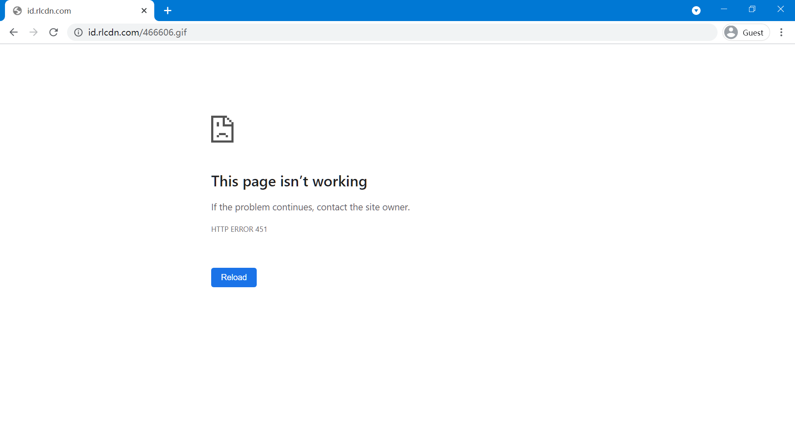
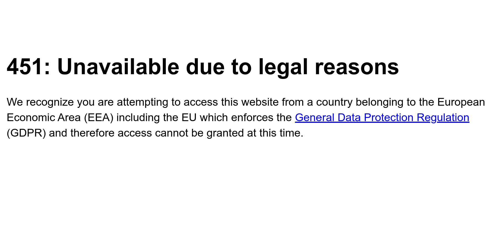
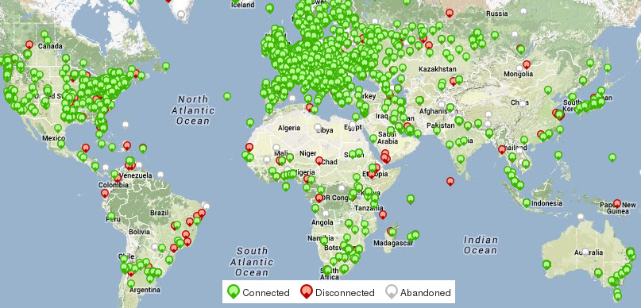
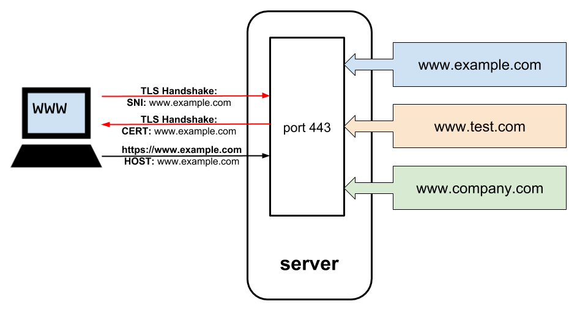
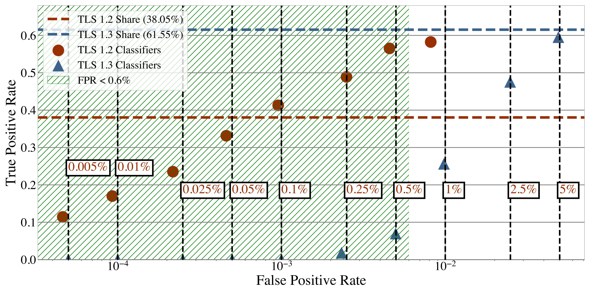
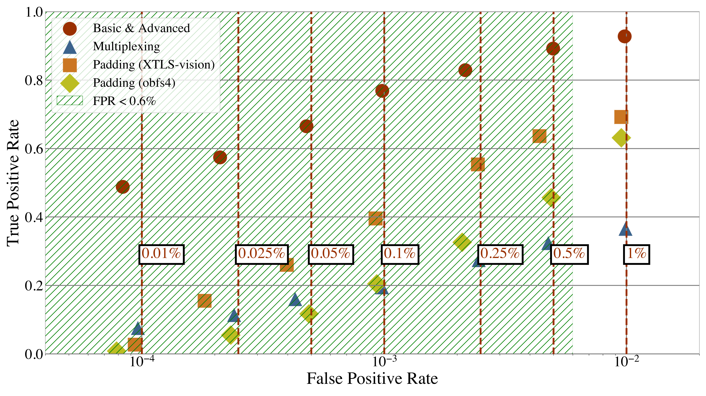

Fingerprinting Obfuscated Proxy Traffic with Encapsulated TLS Handshakes
Q Misell
Max-Planck-Institut für Informatik
18th of February 2025
Internet Censorship, briefly
What is it?
FahrenheitHTTP 451: Unavailable for Legal Reasons


But, why?
- Maintaining control on information
- Copyright
- Anything deemed 'undesirable' - merited or not
How?
- DNS blocks
- IP blocks
- Deep Packet Inspection
Measuring censorship
A case study on Turkey and Russia by Anderson et al.
Global Network Interference Detection Over the RIPE Atlas Networks
Collin Anderson, Philipp Winter, and Roya. 2014
In the 4th USENIX Workshop on Free and Open Communications on the Internet (FOCI 14)
RIPE Atlas

Useful measurements from the Atlas
- DNS resolution
- Traceroute
- Attempting to open an SSL connection
Not possible to make HTTP requests
Turkey: blocking Twitter and YouTube
- Reactive, haphazard censor
- First, false answers from Turkish ISPs' DNS servers
- Then, TLS Server Name Identification interference and IP blocks
- BGP high-jacks as a last resport
Aside: what on earth is SNI?!

SNI is sent in plain text
modulo Encrypted Client Hello
Russia: much more coordinated
- LiveJournal moving sites which the Russian state wishes to block to a special IP range
- Co-ordinated TLS interception by all Russian ISPs
It happens in the EU too
A case study on Spain by Ververis et al.
Understanding Internet Censorship in Europe: The Case of Spain
Vasilis Ververis, Tatiana Ermakova, Marios Isaakidis, Simone Basso, Benjamin Fabian, and Stefania Milan. 2021
In Proceedings of the 13th ACM Web Science Conference 2021 (WebSci ’21)
Broad categories of censorship
- Copyright infringement
- Catalan independence referendum
Most effort concentrated on the Catalan referendum
ISPs' worked to make blocks appear as if the website wasn't functioning
'Nothing to see here, move along'
The goals of a censor
- High false positive rate: undesirable
- High false negative rate: deemed acceptable
Today we were unlucky, but remember we have only to be lucky once, you will have to be lucky always.
— IRA Army Council
A censor wants to block as much undesirable traffic without impacting permissible internet use.
Someone evading a censor wants to blend in as much as possible to avoid detection.
Result: encapsulate traffic in something benign

Traffic on the internet is generally encrypted, so encrypted encapsulated traffic doesn't look out of the ordinary.
Encrypted traffic can still be fingerprinted
TLS-within-TLS looks different to normal TLS
Hold on, why are we stacking TLS?
- Connect to censorship evasion system over TLS
- Load a website
- Website also uses TLS
- TLS-within-TLS
How do the authors detect this?
Packet size n-grams
n-grams?
An ordered list of n symbols
An example
An outbound packet of 300 bytes followed by two inbound packets of 100 and 200 bytes respectively
Resulting n-gram: (300, −100, −200)
Which value to pick for n?
A TLS handshake normally takes 3 round-trips, and 3 works best here
Flow classification
X2 classifier
Determine if a distribution of categorical values significantly differs from another
N.b.: the raw packet sizes are not used
This would result in a potential 30003-degree classifier with the standard Ethernet MTU of 1500
Group into 4 buckets for Client Hello, Server Hello, Client Key Exchange, and everything else
Much more manageable 83-degree classifier.
Burst sequences
Often a call to write() will be split up across multiple packets
Aggregate packets arriving with the connection RTT
The classifier correctly detects a connection as an evasive connection between 50% and 60% of the time whilst incorrectly classifying a harmless stream as an evasive stream only 0,5% of the time

Key takeaways
- Effective against almost any encapsulation protocol
- Decent TPR with a low FPR
Defences

What to do?
- Make encapsulated TLS look more normal
- Padding
- Multiplexing
iCloud Private Relay
- Apple's 'VPN' service
- Uses HTTP/2 and HTTP/3
CONNECT - Effectively TLS-within-TLS
- Will make this kind of traffic more normal with Apple's market penetration
QUIC padding
- QUIC has support for padding frames
- Siby et al. show injecting dummy requests decreases TPR
- From 93% to 54% at the cost of 137kiB of extra data transferred
You get PADDING, everybody gets PADDING! You get privacy? Evaluating practical QUIC website fingerprinting protections for the masses.
Sandra Siby, Ludovic Barman, Christopher Wood, Marwan Fayed, Nick Sullivan, and Carmela Troncoso. 2022.
Post-Quantum Cryptography
- Quantum computer resistant cryptography
- Starting to be deployed on TLS
- Vastly changes how a TLS handshake looks on the wire
- Likely to throw off classifiers
Multipath routing
- Split a connection across multiple routes
- All connections appear unrelated to an outside observer
- Deployed by Apple since 2013
Thank you! Questions?
Email: qmisell@mpi-inf.mpg.de
Slides at magicalcodewit.ch/htdn-slides/